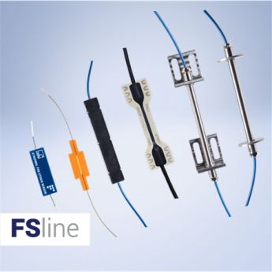
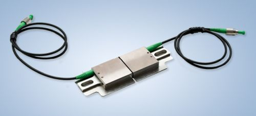
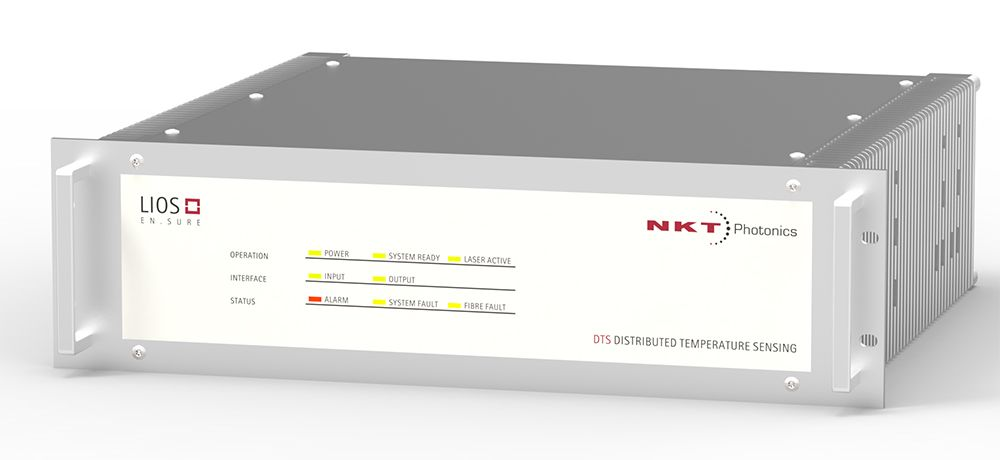

Where to Buy Strain Sensors
Definition: devices for measuring temperatures or temperature distributions
Related products: optical sensing instruments
5 suppliers for strain sensors are listed in the RP Photonics Buyer's Guide. Both manufacturers and distributors can be registered.
| Suppliers with Ad Package | |
|---|---|
| Company | Product Description |
 Rua Vasconcelos Costa, 277 4470–640 Maia Portugal |  Our FS62 optical strain sensors are designed to be bonded to surfaces and materials, spot welded to structures and components, attached or directly cast into concrete wet mix. Their small size and weight makes them the ideal choice for hard-to-reach locations and measuring points. They are particularly suited for structural health monitoring in large structures (SHM), these sensors perfectly match the requirements of strain measurement in several indoor or outdoor applications. |
Fiber technology to sense the world. Technica Optical Components, LLC 3657 Peachtree Rd NE Suite 10A Atlanta, GA 30319 United States Quality: ISO 9001:2008 |  World leader in fiber Bragg grating and micro Fabry–Pérot strain sensors. From ultra-small to large industrial strain sensor packaging, for strains from sub-microstain to 50,000 microstrain, for environments from cryogenic to 1000 °C, and with cores based on standard acrylate or polyimide coated fibers, or truly hermetic copper or gold coated fibers (T15, T25, T100, T130, T150, T170, T210, T220, T230, T240, and TFP10). |
 Blokken 84 3460 Birkerød Denmark Quality: ISO 9000:2015 www.nktphotonics.com Social: Facebook, LinkedIn, Twitter, YouTube Tel.: +45 4348 39 00 Fax: +45 4348 39 01 |  We offer several types of fiber-based distributed strain measurement systems. With the LIOS EN.SURE cable strain measurement system you can measure the strain put on your power cable when unforeseen events happen and take appropriate actions. The LIOS PRE.VENT industrial strain measurement system enables monitoring of large processing plants, reactors, gasifiers and many other large industrial assets – even at remote locations. Operators can monitor thousands of measurement points, optimize operation and detect hazardous situations. For the oil & gas industry, we offer the LIOS WELL.DONE strain measurement system which is developed to meet the demand for low-cost, reliable and easily installable systems in harsh environments such as oil reservoirs. All the systems are maintenance–free and robust, they are the perfect flexible and cost-efficient solution. See us at Laser World of Photonics China 2019 in Shanghai, March 20–22 (booth W2.2436)! |
| Your products are not listed here? Get an ad package! | |
| All Suppliers | |
|---|---|
Rua Vasconcelos Costa, 277 4470–640 Maia Portugal | Our FS62 optical strain sensors are designed to be bonded to surfaces and materials, spot welded to structures and components, attached or directly cast into concrete wet mix. Their small size and weight makes them the ideal choice for hard-to-reach locations and measuring points. They are particularly suited for structural health monitoring in large structures (SHM), these sensors perfectly match the requirements of strain measurement in several indoor or outdoor applications. |
Blokken 84 3460 Birkerød Denmark Quality: ISO 9000:2015 www.nktphotonics.com Social: Facebook, LinkedIn, Twitter, YouTube Tel.: +45 4348 39 00 Fax: +45 4348 39 01 | We offer several types of fiber-based distributed strain measurement systems. With the LIOS EN.SURE cable strain measurement system you can measure the strain put on your power cable when unforeseen events happen and take appropriate actions. The LIOS PRE.VENT industrial strain measurement system enables monitoring of large processing plants, reactors, gasifiers and many other large industrial assets – even at remote locations. Operators can monitor thousands of measurement points, optimize operation and detect hazardous situations. For the oil & gas industry, we offer the LIOS WELL.DONE strain measurement system which is developed to meet the demand for low-cost, reliable and easily installable systems in harsh environments such as oil reservoirs. All the systems are maintenance–free and robust, they are the perfect flexible and cost-efficient solution. |
(a division of Opsens Inc.) 319, Franquet Street, Suite 110 Quebec, Quebec G1P 4R4 Canada | |
Spectrum House Brants Bridge Bracknell RG12 9BG United Kingdom | |
Fiber technology to sense the world. Technica Optical Components, LLC 3657 Peachtree Rd NE Suite 10A Atlanta, GA 30319 United States Quality: ISO 9001:2008 | World leader in fiber Bragg grating and micro Fabry–Pérot strain sensors. From ultra-small to large industrial strain sensor packaging, for strains from sub-microstain to 50,000 microstrain, for environments from cryogenic to 1000 °C, and with cores based on standard acrylate or polyimide coated fibers, or truly hermetic copper or gold coated fibers (T15, T25, T100, T130, T150, T170, T210, T220, T230, T240, and TFP10). |
Click on a company entry to mark it. Product entries of suppliers having an ad package are displayed with a logo, product description and product image. | |
Users: if any displayed information is incorrect (e.g., a listed supplier does not offer such products) or legally problematic, please notify RP Photonics so that the problem can be solved.
Suppliers: you can report modified data using a form, which is provided via the button "Edit profile data" on your company profile page. You can obtain ad package for getting a much improved visibility and many more leads.
If you are a supplier and want to be listed, please use the registration form.
An already registered supplier can use a customized form to report the full list of offered photonics products. That form is reachable with a link at the bottom of the supplier's profile page.
Anyone, not only suppliers themselves, can report additional suppliers. If possible, please provide a web address showing that this supplier indeed offers such products.
If you like this buyer's guide, share it with your friends and colleagues, e.g. via social media: